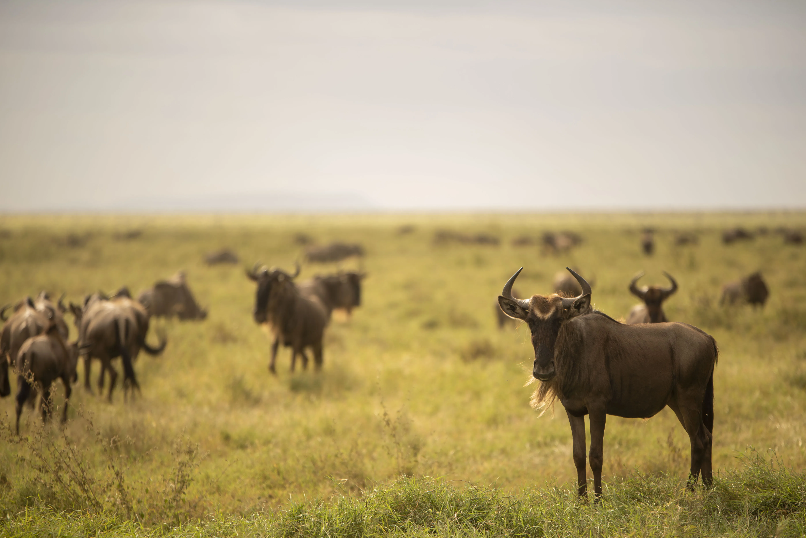
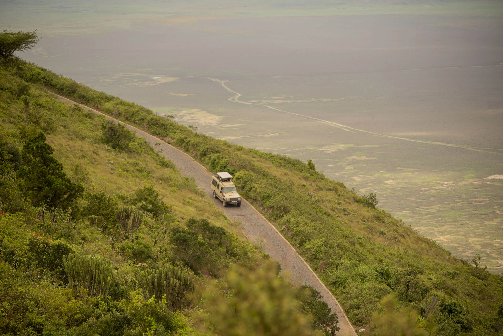
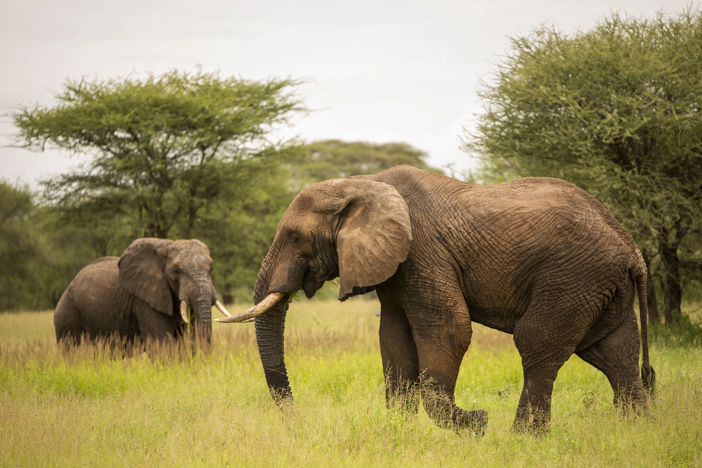
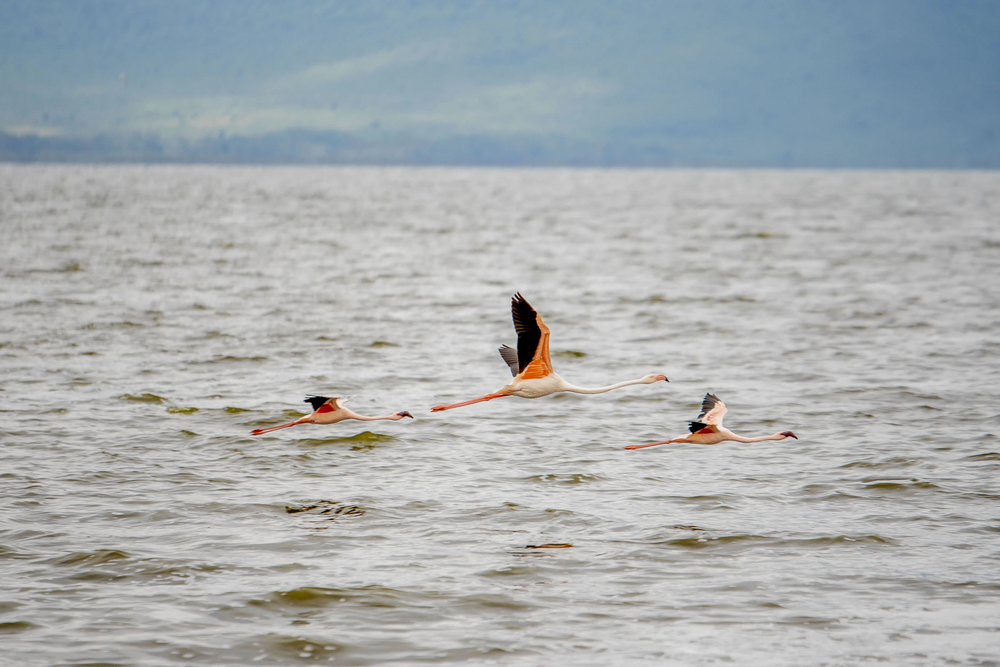

Tanzania's Crown Jewels
All Destinations
Every park. Every landscape. Every story — explored in-depth below.

Serengeti National Park
Northern Tanzania · UNESCO World Heritage
Endless plains teeming with wildlife. Witness the Great Migration — over 1.5 million
wildebeest, zebras and gazelles in Earth's greatest natural spectacle, year after remarkable year.

Ngorongoro Crater
Conservation Area · UNESCO Heritage
Africa's largest intact caldera housing over 25,000 mammals. Spot all of the Big Five
in a single extraordinary day on the crater floor.

Tarangire National Park
Northern Tanzania
Ancient baobabs and Africa's largest elephant herds roam alongside the life-giving
Tarangire River in this spectacular and often under-visited park.

Lake Manyara
Rift Valley · Northern Tanzania
Famous for tree-climbing lions and vast flocks of pink flamingos. Over 400 bird species
thrive in this compact yet extraordinarily diverse park.

Kilimanjaro National Park
Roof of Africa · 5,895 m
Africa's highest peak, crowned in glaciers — a bucket-list climb through five
ecological zones to the legendary Uhuru Peak at dawn.